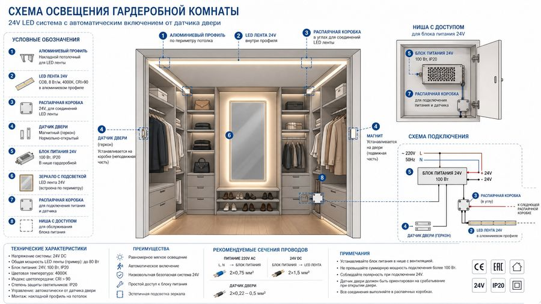
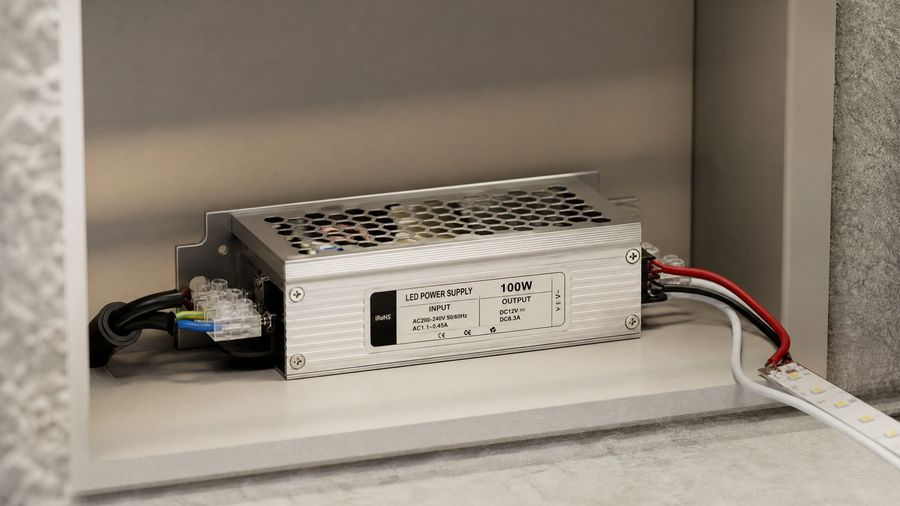

для гардеробной 4 м² закладывайте 2–4 розетки (низкая 250–300 мм и у зеркала 1000–1100 мм), 3 группы света (общий, зеркало, шкафы) и подсветку шкафов на 24 В в алюминиевом профиле. Общий свет — не меньше 1300–1500 лм, у зеркала — 600–1000 лм. Ошибка с блоком питания за глухой стенкой шкафа стоит 8 000–18 000 руб. переделки. Ниже — схема, расчёт света, смета и чек-лист.
Что нужно предусмотреть в гардеробной до отделки
Освещение и розетки считают не по принципу «одна лампа и хватит», а по сценариям. В помещении 3–5 м² их обычно 3–4, и каждый требует отдельного вывода.
Базовые сценарии света
- Общий свет на потолке — 1 группа
- Подсветка шкафов или полок — 1 группа
- Свет у зеркала — 1 группа
- Ночная подсветка пола или цоколя — опционально
Для гардеробной без окна комфортный уровень — 200–300 лк по общему свету и 400–500 лк у зеркала. Для 4 м² это 800–1200 лм минимум и 1200–1800 лм для удобного использования. На практике:
- 1 накладной светильник 18–24 Вт, поток 1600–2200 лм
- или 2 встраиваемых по 8–10 Вт и 700–900 лм
- или 3–4 спота по 6–7 Вт
У зеркала — ещё 600–1000 лм отдельно, иначе лицо будет в тени.
Где реально нужны розетки
В гардеробной редко ставят много розеток, но 1–3 точки очень полезны:
- Вертикальный пылесос или зарядка ручного
- Парогенератор, отпариватель или утюг
- Зарядка триммера, фена, зеркала с подсветкой
- Роутер или слаботочный шкаф, если гардеробная примыкает к коридору
Практический минимум для 4 м² — 2 розетки 16 А: одна на 250–300 мм от пола, вторая на 1000–1100 мм у зеркала. Если планируете хранить вертикальный пылесос в нише 300–350 мм, розетку сместите на 100–150 мм в сторону, чтобы вилка не упиралась в корпус.
Когда нужна отдельная линия, а когда нет
Нагрузка гардеробной обычно невелика:
- Общий свет — 20–30 Вт
- Подсветка шкафов — 20–60 Вт
- Подсветка зеркала — 10–20 Вт
- Отпариватель — 1500–2200 Вт
- Утюг — 1800–2600 Вт
Поэтому возможны 2 схемы:
- Свет гардеробной — на общей группе освещения квартиры, кабель 3×1,5 мм², автомат 10 А
- Розетки — к общей розеточной линии комнаты или коридора, кабель 3×2,5 мм², автомат 16 А
Отдельную линию тянут, если гардеробная больше 6–8 м², стоит гладильная система 2,2–3,0 кВт, выносится слаботочный шкаф с ИБП или помещение удалено на 12–18 м от ближайшей линии.
Совет: если гардеробная примыкает к спальне, не сажайте её свет на проходной выключатель спальни без отдельной клавиши. Ночью это удобно только первые два дня.

Схема разводки: что закладывать в штробы и потолок
Электрика работает, когда вы заранее знаете мебель. Не «примерно шкаф», а конкретно: глубина 600 мм, антресоль на 2300 мм, зеркало 600×1800 мм, открытая секция 800 мм.
Оптимальная схема для гардеробной 4 м²
Рабочая схема, которую можно брать за основу:
- Линия света 3×1,5 мм², автомат 10 А: выключатель у входа на 900 мм, потолочный свет, подсветка зеркала, блок питания LED-ленты 24 В
- Линия розеток 3×2,5 мм², автомат 16 А, УЗО/диф 30 мА: розетка низкая 250–300 мм, розетка у зеркала 1000–1100 мм
Если подсветка шкафов длинная, ведите 24 В, а не 12 В. На трассах 2,5–4,0 м падение напряжения у 24 В меньше, лента светит ровнее. Для ленты 9,6 Вт/м длиной 4 м общая мощность — 38,4 Вт. Блок питания берут с запасом 20–30%, то есть минимум 50 Вт, лучше 60 Вт.
Где ставить выключатели и датчики
Три рабочих варианта: обычный выключатель у входа; выключатель + датчик открытия двери; датчик движения или присутствия.
Удобнее всего комбинированная схема:
- Потолочный свет — обычная клавиша на 850–950 мм
- Подсветка шкафов — датчики открытия фасадов
- Зеркало — отдельная клавиша или сенсор
Датчик движения в тесной гардеробной капризен: близко к двери — срабатывает от прохода в коридоре, глубоко — слепые зоны. Для помещения 2×2 м берите потолочный датчик с углом 360° и зоной 4–6 м, но ставьте не по оси двери, а со смещением 30–40 см.
Высоты и отступы
| Элемент | Высота / отступ |
|---|---|
| Выключатель у входа | 900 ± 100 мм |
| Розетка нижняя | 250–300 мм от пола |
| Розетка над комодом | 1000–1100 мм |
| Вывод под зеркало с подсветкой | 1700–1900 мм |
| Вывод под блок питания антресоли | 2200–2400 мм |
| Отступ выключателя от проёма | 100–150 мм |
| Отступ розетки от угла | от 100 мм |
| Глубина штробы под ВВГнг-LS 3×2,5 | 20–25 мм |
Сколько света нужно и какие светильники выбрать
Освещение без окна проваливается по двум причинам: один слабый спот 6 Вт или очень холодный свет 6500 К, от которого одежда выглядит чужой.
Расчёт света для гардеробной 4 м²
Для 250 лк нужен поток 4 × 250 = 1000 лм. С учётом потерь на рассеивателе, теней от мебели и тёмных фасадов умножаем на 1,3–1,5. Получаем 1300–1500 лм. Рабочие варианты:
| Тип света | Мощность | Поток | Цена |
|---|---|---|---|
| 1 накладной LED | 18–24 Вт | 1600–2200 лм | 2 500–6 500 руб. |
| 2 встраиваемых | 2 × 8–10 Вт | 1400–1800 лм | 2 000–5 000 руб. |
| 4 спота на шине | 4 × 6–7 Вт | 1600–2400 лм | 5 500–14 000 руб. |
| LED-линия в профиле 2 м | 18–28 Вт | 1800–2600 лм | 4 500–11 000 руб. |
Для зеркала добавляем 8–12 Вт линейной подсветки, 600–1000 лм, температуру 3000–4000 К, CRI не ниже 80, лучше 90.
Тёплый или нейтральный свет
- 2700 К делает тёмную одежду теплее и желтее
- 4000 К лучше для выбора цвета рубашек и макияжа
- 6500 К в квартире почти всегда слишком жёсткий
Если помещение 3 м² и меньше, берите один тон на все группы. Разница 3000 К и 4000 К на границе зон даёт неприятный контраст.
Совет: лента 60 диодов/м с матовым профилем светит заметно ровнее, чем дешёвая 30 диодов/м без профиля, даже при одинаковых 9,6 Вт/м.
Подсветка шкафов и полок: где экономить нельзя
Ленту нельзя просто прилепить к ЛДСП и забыть — здесь больше всего скрытых расходов.
Профиль, лента и блок питания
Для обычной гардеробной подходят 2 варианта:
- Лента 24 В, 9,6 Вт/м, 800–1000 лм/м — декоративная и рабочая подсветка
- Лента 24 В, 14,4 Вт/м, 1200–1500 лм/м — если подсветка заменяет часть общего света
Минимальная правильная сборка:
- Алюминиевый профиль 16×12 мм или 17×8 мм
- Матовый рассеиватель
- Блок питания с запасом 20–30%
- Кабель до ленты 2×0,75 мм², при длине более 5 м — 2×1,0 мм²
- Доступ к блоку питания через съёмную полку, лючок или верхнюю нишу
Ориентиры по стоимости на 2026 год:
| Позиция | Цена |
|---|---|
| Лента 24 В, 9,6 Вт/м | 250–700 руб. за 1 м |
| Лента 24 В, 14,4 Вт/м | 400–950 руб. за 1 м |
| Алюминиевый профиль | 350–900 руб. за 2 м |
| Блок питания 60 Вт | 1 200–3 500 руб. |
| Датчик открытия двери | 400–1 500 руб. |
| Монтаж одной линии подсветки | 1 500–4 000 руб. |
Расчёт подсветки на шкаф 2,4 м
Шкаф 2,4 м с двумя вертикальными секциями и антресолью: 2 вертикальные по 2,1 м = 4,2 м, плюс горизонтальная 2,0 м. Итого 6,2 м ленты.
Лента 9,6 Вт/м: 6,2 × 9,6 = 59,52 Вт. Блок питания: 59,52 × 1,25 = 74,4 Вт. Ставим 75–100 Вт.
По деньгам:
- Лента 6,2 м × 450–700 руб. = 2 790–4 340 руб.
- Профиль 4 шт. по 2 м = 1 400–3 600 руб.
- Блок 75–100 Вт = 1 500–4 000 руб.
- Датчики 2–3 шт. = 800–4 500 руб.
- Пайка, соединения, монтаж = 4 000–9 000 руб.
Итог по подсветке шкафа: 10 490–25 440 руб..
Частая ошибка и цена
Самая распространённая ошибка — клеить ленту прямо на ЛДСП без профиля. Первые 2–3 недели всё выглядит нормально, потом клей отслаивается от нагрева, сегменты тускнеют, на светлой полке видны точки диодов. Через 6–18 месяцев ленту меняют.
Переделка для линии 4 м:
- Демонтаж и новая проклейка: 2 000–4 000 руб.
- Новая лента: 1 200–3 000 руб.
- Профиль, которого не было: 700–1 800 руб.
- Повторный монтаж: 2 500–5 000 руб.
Итого цена ошибки: 6 400–13 800 руб.. Экономия на старте была всего 1 500–3 000 руб.
Смета на электрику в гардеробной 4 м²
Черновой этап
Комплект: 1 линия света 12 м кабеля, 1 линия розеток 14 м, 2 розетки, 1 двухклавишный выключатель, 3 вывода света, 1 вывод под блок питания ленты.
| Работа | Объём | Цена |
|---|---|---|
| Кабель ВВГнг-LS 3×1,5 | 12–15 м | 1 000–1 800 руб. |
| Кабель ВВГнг-LS 3×2,5 | 14–18 м | 1 700–3 000 руб. |
| Штробление | 20–25 м.п. | 6 000–15 000 руб. |
| Подрозетники | 3–4 шт. | 300–800 руб. |
| Монтаж кабеля и распредкоробок | комплект | 7 000–16 000 руб. |
| Автомат 10 А + 16 А | 2 шт. | 800–2 500 руб. |
| УЗО/дифзащита 30 мА | 1 шт. | 2 000–6 000 руб. |
Черновая электрика — 18 800–45 100 руб., если не трогать весь щиток квартиры. Новый модуль в щите добавляет 2 500–8 000 руб.
Чистовой этап и свет
Средний набор: 1 потолочный светильник, 1 подсветка зеркала, 6 м ленты в профиле, 2 розетки, 1 выключатель, 2–3 датчика.
| Позиция | Количество | Цена |
|---|---|---|
| Потолочный светильник | 1 шт. | 2 500–6 500 руб. |
| Подсветка зеркала | 1 шт. | 2 000–8 000 руб. |
| LED-лента 24 В | 6 м | 1 500–5 700 руб. |
| Алюминиевый профиль | 3–4 шт. по 2 м | 1 050–3 600 руб. |
| Блок питания 75–100 Вт | 1 шт. | 1 500–4 000 руб. |
| Розетки и рамки | 2 точки | 1 200–4 500 руб. |
| Выключатель | 1 шт. | 500–2 500 руб. |
| Монтаж чистовой | комплект | 8 000–20 000 руб. |
Чистовой этап — 18 250–54 800 руб..
Полная смета по гардеробной 4 м²:
- Экономичный рабочий уровень: 37 000–52 000 руб.
- Средний уровень: 52 000–78 000 руб.
- С хорошей подсветкой мебели и датчиками: 78 000–110 000 руб.

Пошаговая инструкция: как сделать электрику без переделок
Порядок работ
- Измерьте помещение: длина, ширина, высота, проём, проходы. Нужны хотя бы 6 размеров, а не только площадь.
- Нарисуйте мебель с глубиной 350, 450 или 600 мм.
- Разделите свет на 2–4 группы: общий, зеркало, шкафы, цоколь. Для маленькой — 3 группы.
- Посчитайте освещённость: на 4 м² минимум 1300–1500 лм общего света и 600–1000 лм у зеркала.
- Определите места розеток. Минимум 2 точки, максимум — 3–4.
- Решите, где будет блок питания ленты. Доступ должен оставаться после сборки мебели.
- Проложите кабель: свет 3×1,5 мм², розетки 3×2,5 мм².
- До штукатурки сфотографируйте трассы с рулеткой.
- После чистовой отделки смонтируйте потолочный свет и розетки, потом мебель, потом подсветку.
- Проверьте всё под нагрузкой: свет, датчики, ленту через 15–20 минут, нагрев блока, отсутствие мерцания.
Что проверить до заказа мебели
- Хватает ли 20–30 мм зазора за задней стенкой под проводку
- Не попадает ли розетка в вертикальную стойку 16–18 мм
- Есть ли вентиляция для блока питания — 30–50 мм свободного пространства
- Можно ли вынуть блок без разборки половины секции
- Не перекрывает ли дверь выключатель при открывании на 90°
Нормы, безопасность и нюансы монтажа
Гардеробная — не ванная, но часть жилой квартиры, где действуют обычные требования по электромонтажу.
Что важно по практике и нормативам
- Медные кабели для внутренних сетей — стандарт для квартиры
- Кабель — с индексом нг-LS
- Соединения — в доступных коробках или обслуживаемых узлах
- Скрытая проводка — по вертикали и горизонтали, без диагоналей
- Группа освещения — автомат 10 А
- Розеточная группа — 16 А
- Защитное отключение 30 мА для розеток квартиры — оправданное решение
Для гардеробной с зеркалом и мебельной подсветкой особенно важно не перегревать скрытые блоки питания. У блока 60–100 Вт температура корпуса при плохой вентиляции растёт уже через 20–40 минут. Поэтому:
- Не зажимайте блок вплотную к утеплителю, одежде, коробкам
- Не укладывайте его на дно закрытой ниши без воздуха
- Оставляйте 3–5 см свободного пространства по бокам
Когда звать электрика вместе с мебельщиком
Есть ситуации, когда электромонтаж без мебельной привязки почти гарантированно приведёт к переделке:
- Встроенный шкаф от пола до потолка 2600–3000 мм
- Зеркала с сенсорной подсветкой и скрытым подключением
- Выдвижные ящики с внутренней подсветкой
- Секции глубиной 350–400 мм
- Антресоли с подъёмными фасадами
Совместный выезд электрика и замерщика мебели за 1–2 часа почти всегда выгоднее, чем потом переносить 2 розетки и вывод света за 8 000–18 000 руб.
Чек-лист
- У гардеробной минимум 2 сценария света, а не один потолочный.
- Общий свет даёт не меньше 1300–1500 лм на 4 м².
- У зеркала есть отдельная подсветка 600–1000 лм.
- Запланированы минимум 2 розетки: низкая и у зеркала.
- Высоты розеток и выводов привязаны к реальной мебели.
- Блок питания ленты доступен без разборки шкафа.
- LED-лента установлена в алюминиевый профиль, а не на голую ЛДСП.
- Для света — кабель 3×1,5 мм², для розеток — 3×2,5 мм².
- Трассы проводки сфотографированы до отделки.
- Датчики не конфликтуют с дверью и проходом.
- В смете есть запас 10–15% на доборы, профили, клеммы и переделку 1–2 точек.
- Электрика и мебель согласованы до начала чистовой отделки.
Вопросы и ответы
Сколько розеток нужно в гардеробной 4 м²?
Минимум 2 розетки 16 А: одна на 250–300 мм от пола, вторая на 1000–1100 мм у зеркала. Если есть вертикальный пылесос и отпариватель — 3–4 точки.
Какой свет лучше для гардеробной — 3000 К или 4000 К?
Для выбора цвета одежды и макияжа — 4000 К. Для вечерней атмосферы — 3000 К. Не смешивайте тона на разных группах в помещении меньше 3 м².
Почему лента 24 В, а не 12 В?
На трассах 2,5–4,0 м падение напряжения у 12 В заметно сильнее. Лента 24 В светит ровнее по всей длине. Для 6,2 м ленты 9,6 Вт/м нужен блок 75–100 Вт с запасом 20–30%.
Нужна ли отдельная линия на гардеробную?
Если только свет и 2 розетки — можно на общей группе. Отдельная линия нужна при площади 6–8 м², гладильной системе 2,2–3,0 кВт или слаботочном шкафе с ИБП.
Можно ли клеить LED-ленту прямо на ЛДСП?
Нельзя. Клей отслаивается от нагрева, сегменты тускнеют, на светлой полке видны точки диодов. Через 6–18 месяцев ленту придётся менять. Переделка линии 4 м — 6 400–13 800 руб.
Где размещать блок питания подсветки шкафа?
В доступном месте: съёмная полка, лючок, верхняя ниша. Не за глухой стенкой шкафа без ревизии. Вентиляционный зазор — 3–5 см по бокам, не вплотную к утеплителю и одежде.
Источники
Материал подготовлен с опорой на следующие документы и данные:
- Минстрой России
- СП 256.1325800.2016, п. 15.28 (розетки в коридорах и подсобных помещениях)
- СП 52.13330.2016, табл. 4.2 (нормы освещённости помещений жилых и общественных зданий)
- ГОСТ Р 21.1101-2013 (основные требования к проектной и рабочей документации)
- МГСН 1.01-98, п. 5.69 (размещение ВРЩ)
- Arlight (производитель LED-лент и профилей)
- Gauss (производитель светодиодного оборудования)
Дисклеймер
Материалы журнала «Ремонт на примерах» носят информационный характер. Приведённые цены, сроки и нормативы являются ориентировочными: они зависят от региона, состояния объекта, уровня исполнителей и текущей рыночной ситуации, поэтому не могут служить точной сметой или гарантией результата. Перед началом работ проконсультируйтесь со специалистами и проверяйте актуальные требования нормативных документов. Редакция не несёт ответственности за решения, принятые на основании этих материалов.